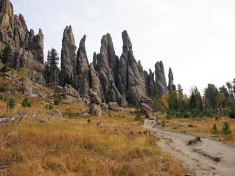
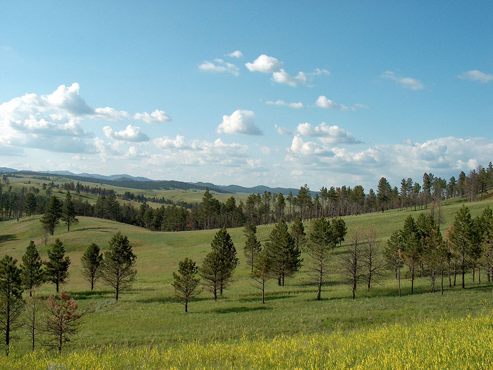
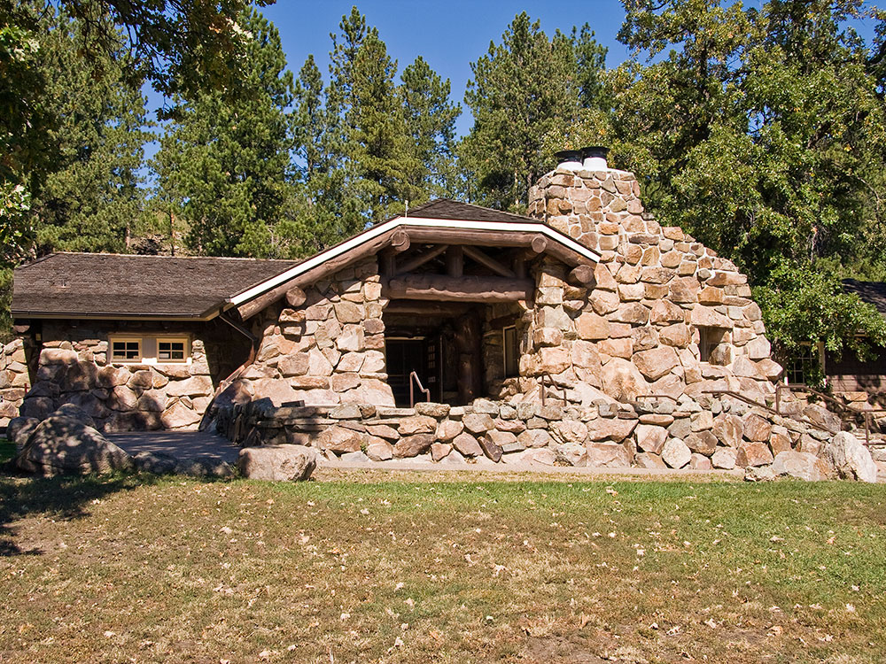
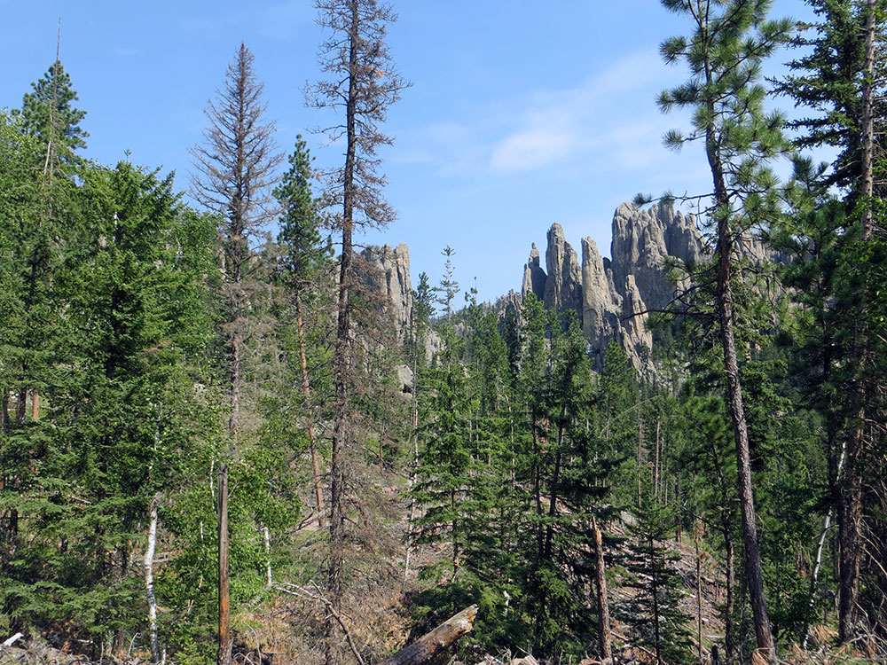
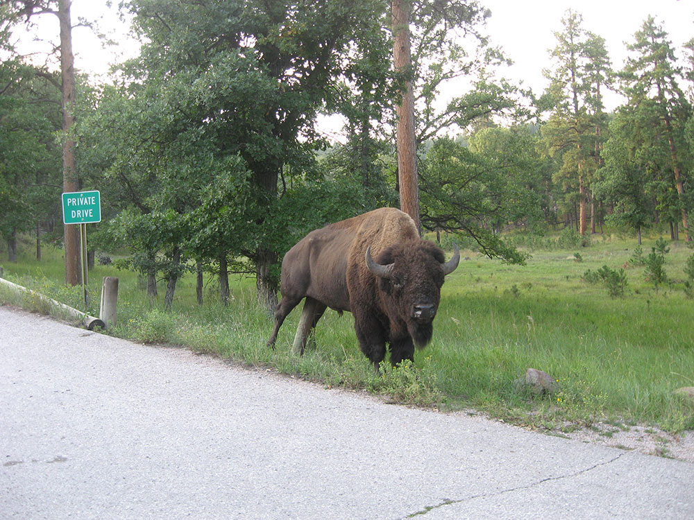
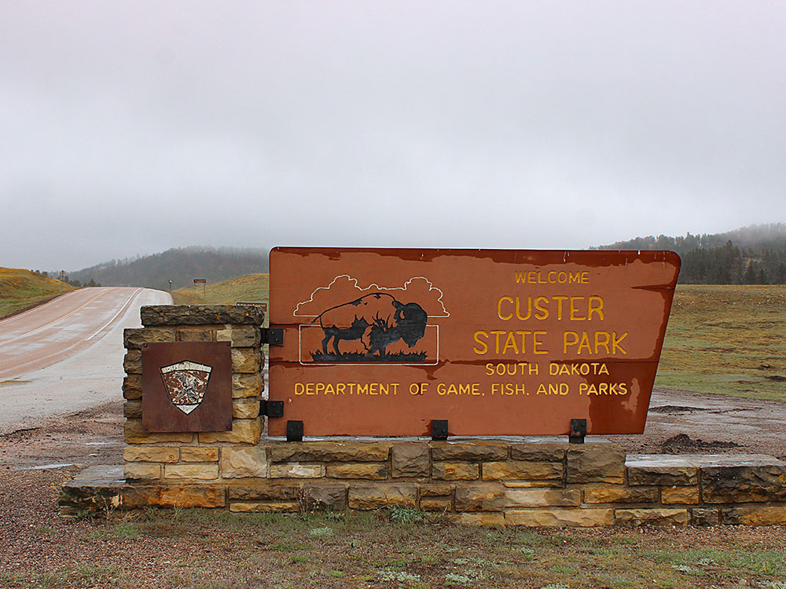

.jpg){kind=link}
Expansive wildlife preserve and recreation area featuring scenic drives, granite peaks, lakes, hiking trails, and one of the nation's largest publicly owned bison herds.
General Information
Motorcycle (1-7 days): $20
Annual Pass: $40 South Dakota residents
Annual Pass: $60 nonresidents
How to Get There
From Custer (5 mi): Take US-16A east from Custer, follow signs for Custer State Park, and continue to the main visitor area and park entrances along Wildlife Loop Road and US-16A.
Overview
Custer State Park is a 71,000-acre state park in the heart of the Black Hills of South Dakota, known for its herd of about 1,300 free-roaming bison and for scenic drives through granite spires, pine forests and open prairie. Founded in 1919, it is one of the largest state parks in the country and offers wildlife viewing, hiking, climbing, fishing, camping and lodging. The Needles Highway, Iron Mountain Road and Wildlife Loop Road wind through the park, and Sylvan Lake and Black Elk Peak, the highest point east of the Rockies, are major highlights. Visitors come for bison, burros, pronghorn, mountain goats and the annual Buffalo Roundup each September.
Access
The park is about 30 miles south of Rapid City and 5 miles east of the town of Custer, along US-16A and SD-87. Visitors drive from Rapid City on US-16, about 45 minutes, or from Hot Springs. Several entrances serve the park, and the Peter Norbeck Visitor Center is the main stop. Most visitors arrive by car and drive the scenic loops, and the Needles Highway has narrow tunnels that limit large vehicles.
Seasons
The park is open year-round, with summer the busiest, from late May through September. Summer brings wildlife along the Wildlife Loop, warm days and activities such as fishing and swimming. Fall has the Buffalo Roundup in late September and golden aspens. Winter is cold and snowy, with some roads, including the Needles Highway, partially closed, but wildlife viewing is quiet. Spring brings green hills and baby bison.
Things to Do
Drive the Wildlife Loop Road
Custer State Park's 18-mile Wildlife Loop Road is the best place to see bison, pronghorn, burros, deer and prairie dogs. Early morning and evening are the best times.
Drive the Needles Highway
This scenic highway winds through granite spires and narrow tunnels. Highlights include the Needle's Eye and Cathedral Spires.
Swim and Hike at Sylvan Lake
Sylvan Lake has a beach, boat rentals and a loop trail. It is among the park's most photographed spots.
Witness the Buffalo Roundup
Each September, cowboys and cowgirls on horseback round up the herd. The event draws thousands of visitors.
Climb Black Elk Peak
The trail to South Dakota's highest point starts near Sylvan Lake and ends at a stone fire tower with big views.
Top Trails
Sylvan Lake Shore Trail
Length: Approximately 1 mile loop
Elevation Gain: Minimal
Difficulty: Easy
This loop circles the lake among granite boulders and pines, with views of the Needles. It is a favorite for families.
Cathedral Spires Trail
Length: Approximately 2.4 miles round trip
Elevation Gain: Approximately 500 feet
Difficulty: Moderate
The trail climbs through granite spires and forest to a view of the Cathedral Spires. It is steady and shady.
Black Elk Peak Trail
Length: Approximately 7 miles round trip
Elevation Gain: Approximately 1,100 feet
Difficulty: Moderate to Strenuous
This popular trail climbs to the highest point east of the Rockies, with a stone tower at the top. Start early for the best light.
Visitor Centers
The Peter Norbeck Visitor Center, along US-16A, is the park's main information stop, with exhibits on wildlife and history, a bookstore, a theater, restrooms and rangers who provide maps and wildlife tips. It is open daily with seasonal hours, longest in summer. The park also has the Game Lodge Interpretive Center and visitor contact stations. Check the South Dakota Game, Fish and Parks website for current hours.
Camping and Lodging
The park has nine campgrounds and several historic resort lodges, including the State Game Lodge, Sylvan Lake Lodge, Blue Bell Lodge and Legion Lake Lodge, plus cabins, with reservations strongly recommended. Custer, about 10 minutes away, has hotels and motels, and Hill City and Keystone, about 30 to 45 minutes away, offer more. Rapid City, about 45 minutes north, has a full range, including the Hotel Alex Johnson. Check each property's website for current availability.
This article uses material from the Wikipedia article and official pages for Custer State Park, South Dakota Game, Fish and Parks: Custer State Park, released under the Creative Commons Attribution-Share-Alike License 3.0.
Featured Trails

Black Elk Peak
Highest natural point in South Dakota, with a 7 mile round-trip trail to the summit
AlexiusHoratius, CC BY-SA 3.0, via Wikimedia Commons; Image Size Adjusted

Jeff P from Berkeley, CA, USA, CC BY 2.0, via Wikimedia Commons; Image Size Adjusted
.jpg){kind=link}
Custer State Park Wildlife Loop Road
Scenic 18-mile loop road through rolling prairie and pine-covered hills offering close-up views of bison, pronghorn, deer, and other native wildlife.

Jeff P from Berkeley, CA, USA, CC BY 2.0, via Wikimedia Commons; Image Size Adjusted
Jeff P from Berkeley, CA, USA, CC BY 2.0, via Wikimedia Commons; Image Size Adjusted
The Needles of Black Hills
Scenic mountain roadway winding through granite spires, narrow rock tunnels, forested landscapes, and dramatic overlooks within a large wildlife preserve.
Needles Highway
Scenic mountain roadway winding through granite spires, narrow rock tunnels, forested landscapes, and dramatic overlooks within a large wildlife preserve.
Sylvan Lake
Mountain lake surrounded by granite formations and pine forests that offers boating, fishing, swimming, hiking, picnicking, and scenic views.





.jpg){kind=link}


